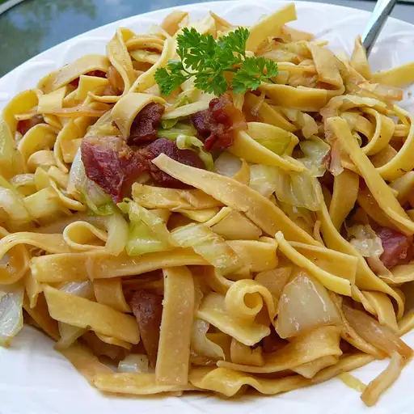

Quick Halushki

Description
This is a polish dish that combines bacon, fried cabbage
and egg noodles.
Ingredients
- 1 lb bacon
- 1 diced onion
- 1 (16ounce) package egg noodles
- 1 sliced head cabbage
- salt and ground black pepper
Steps
- Cut bacon into small pieces and cook in a large
skillet over medium heat until crispy. Cook and
stir onion with bacon until translucent. Set aside,
leave drippings in the skillet.
- Boil large pot of lightly salted water. Cook egg
noodles in the water until firm to bite. Drain.
- Transfer bacon and onion mix with drippings into the
pot used to cook the noodles and stir cabbage until
coated with drippings. Cover pot and cook until cabbage
is tender. Gently stir in noodles and season to taste with
salt and black pepper.